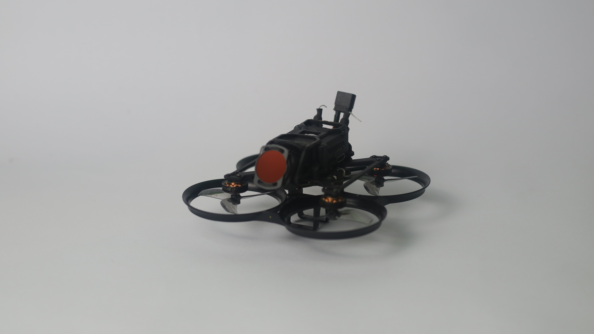
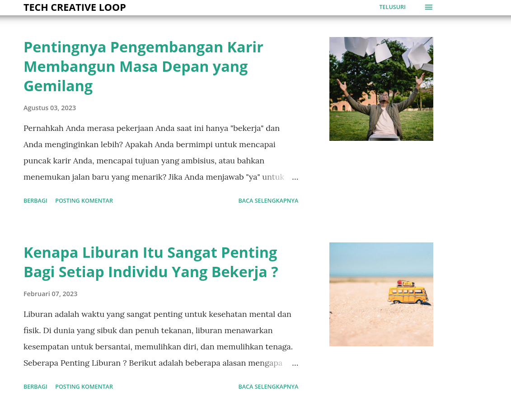

Saya
Yusma Rahman
Web Developer, GIS Administrator, Junior Data Analyst
Halo! Saya Yusma Rahman, seorang GIS Administrator dengan pengalaman lebih dari enam tahun dalam manajemen data spasial. Pekerjaan saya berfokus pada memastikan akurasi data, menyelesaikan masalah teknis, dan mendukung tim melalui pelatihan yang efektif.
Saat ini, saya sedang mengembangkan keterampilan di bidang pengembangan web dan analitik data, didorong oleh hasrat untuk terus belajar dan berkembang. Meskipun saya baru memulai perjalanan ini, saya sangat antusias dengan bagaimana keterampilan baru ini dapat melengkapi keahlian GIS saya.
SMK Bina Banua Banjarmasin | 2014 - 2017
Saya mempelajari dasar-dasar jaringan komputer, termasuk teknologi LAN, MAN, dan WAN. Saya juga mendapatkan pengalaman langsung dalam jaringan nirkabel dan manajemen server, serta menguasai penggunaan MikroTik untuk konfigurasi dan pemeliharaan jaringan.
UNISKA Banjarmasin | 2017 - 2021
Dalam program Sarjana Teknik Komputer saya, saya mengikuti berbagai mata kuliah yang mencakup topik-topik penting seperti jaringan dasar, pengembangan web (termasuk HTML, CSS, dan JavaScript), serta manajemen basis data SQL. Saya lulus dengan IPK 3,61 dan meraih predikat "Lulus dengan Pujian."
CV. Peninsula Abadi | 2018 - 2021
Sebagai Junior GIS Administrator, saya mengelola data pemetaan skala kecil, dengan fokus pada pembaruan dan pemeliharaan untuk memastikan akurasi. Saya bekerja sama dengan tim untuk menjaga integritas data dan mendukung kebutuhan proyek dengan tugas-tugas GIS yang penting.
CV. Peninsula Abadi | 2021 - 2024
Sebagai Senior GIS Administrator, saya mengawasi proses validasi data secara menyeluruh untuk memastikan akurasi dan kelengkapan data klien. Saya juga memimpin tim administrator junior, memberikan bimbingan untuk meningkatkan efisiensi dan menjaga standar kualitas data, dengan fokus kuat pada jaminan kualitas yang konsisten.
Tampilkan SertifikatDqlab.id | Program Pembelajaran Data Sains Online
Dalam Program SQL Database, saya mempelajari dasar-dasar SQL, dimulai dengan pernyataan SELECT untuk pengambilan data yang efisien. Saya melanjutkan untuk menggunakan FUNCTION dan GROUP BY untuk kueri yang lebih kompleks, kemudian menjelajahi INNER JOIN dan UNION untuk menggabungkan data dari beberapa tabel. Akhirnya, saya mengasah keterampilan saya dengan GROUP BY dan HAVING untuk menyaring hasil agregat dengan efektif.
Tampilkan SertifikatSololearn.com | Aplikasi Gratis Untuk Pelajaran Programming dan Coding
Dalam kursus SQL Intermediate, saya mempelajari dasar-dasar SQL, termasuk penyaringan data, penggunaan fungsi, dan penulisan subquery. Saya menjelajahi JOIN untuk menggabungkan tabel, melakukan berbagai operasi tabel, dan mengerjakan tantangan dunia nyata yang praktis untuk lebih menerapkan dan memperkuat keterampilan penting ini.
Tampilkan SertifikatLIA Banjarmasin | 2018 - 2023
Dalam program English Conversation, saya mempelajari dasar-dasar berbicara dalam bahasa Inggris, termasuk bagaimana memulai dan menjaga percakapan dengan percaya diri, lancar, dan menyenangkan. Saya berlatih membuat small talk, bertukar informasi dengan sopan, relevan, dan jelas, serta merespons berbagai situasi sehari-hari secara efektif. Saya juga mengerjakan proyek praktis seperti simulasi percakapan untuk menerapkan keterampilan ini dalam berbagai konteks kehidupan nyata dan profesional.
Tampilkan SertifikatBorneo Urban Lab | 2022 - 2023
Saya adalah bagian dari tim relawan yang mengajar bahasa Inggris kepada anak-anak di Pelambuan, Kalimantan Selatan. Kami berbagi pengetahuan untuk membantu mereka berbicara bahasa Inggris. Perjalanan ini menunjukkan betapa rajin, pekerja keras, dan antusiasnya mereka dalam mempelajari bahasa ini, dan kami bersyukur dapat berkontribusi pada perkembangan mereka.
Tampilkan SertifikatSaya ahli dalam menciptakan pengalaman visual luar biasa dengan rekaman drone FPV, memberikan perspektif unik yang memperkaya proyek dan memperkuat citra perusahaan Anda
SelengkapnyaFokus saya adalah menciptakan desain responsif dan ramah pengguna yang menggambarkan esensi merek Anda, sambil menarik perhatian dan melibatkan audiens.
SelengkapnyaDengan keahlian dalam manajemen GIS, saya menyediakan layanan ahli dan profesional dalam pembersihan serta pengelolaan data menggunakan QGIS.
SelengkapnyaTingkatkan efisiensi bisnis Anda dengan layanan entri data cepat, akurat, dan terpercaya, yang mendorong hasil yang terukur.
SelengkapnyaFoto produk yang jelas, menarik, dan membuat barang Anda menonjol, menarik perhatian dengan mudah.
SelengkapnyaBuat konten menarik untuk brand Anda, dari video hingga postingan media sosial, untuk terhubung dengan audiens.
Selengkapnya


Mari mulai percakapan! Jika Anda memiliki pertanyaan, membutuhkan informasi lebih lanjut, atau memerlukan bantuan dengan proyek Anda, hubungi kami hari ini. Kami siap membantu dan sangat antusias untuk berdiskusi tentang bagaimana layanan kami dapat memberikan dampak positif pada tujuan Anda.
Hubungi Saya
Email Saya
Instagram Saya
© Portfolio | Yusma Rahman All Rights Reserved. Designed by HTML Codex
Sebagai seseorang yang terus mengasah keterampilan dalam pengambilan gambar drone FPV, saya mengkhususkan diri dalam menangkap bidikan udara yang memukau untuk proyek properti dan profil perusahaan. Dengan menggunakan peralatan drone canggih, saya fokus untuk menyajikan rekaman yang halus dan berkualitas tinggi, yang menonjolkan fitur unik properti real estat serta memberikan perspektif menarik untuk bisnis. Baik itu untuk menampilkan properti mewah yang dijual atau membuat profil perusahaan yang mengesankan, tujuan saya adalah menciptakan rekaman visual yang memikat dan meningkatkan dampak proyek Anda.

Dalam proses ini, saya fokus untuk mengambil sudut terbaik, menangkap pemandangan luas, dan menonjolkan detail-detail yang sering terlewat dengan fotografi tradisional. Untuk proyek properti, saya pastikan untuk menonjolkan poin-poin penjualan utama seperti tata letak, pemandangan sekitar, dan estetika secara keseluruhan. Untuk profil perusahaan, saya bertujuan untuk menceritakan kisah merek Anda melalui visual udara yang menyoroti lokasi bisnis, fasilitas, dan lingkungan Anda. Meskipun saya masih dalam tahap pembelajaran, saya memastikan setiap pengambilan gambar dilakukan secara profesional untuk memenuhi standar tertinggi.
Saya percaya bahwa rekaman drone FPV menawarkan cara yang dinamis dan menarik untuk mempersembahkan properti dan bisnis. Itulah sebabnya saya bekerja sama dengan klien untuk memahami visi mereka dan menyediakan rekaman yang selaras dengan tujuan mereka. Seiring saya terus menyempurnakan keterampilan saya, saya berkomitmen untuk memberikan Anda bidikan udara yang luar biasa yang akan meningkatkan daftar properti dan profil perusahaan Anda.
Jika Anda tertarik untuk mengeksplorasi lebih banyak video kami, klik di sini.

Sebagai seorang pengembang web yang masih belajar, saya fokus pada pembuatan situs web yang ramah pengguna dan dapat diakses di berbagai perangkat. Saya berusaha memastikan setiap proyek yang saya kerjakan memiliki desain yang bersih dan modern, memberikan pengalaman pengguna yang menyenangkan. Setiap situs web yang saya buat dirancang dengan navigasi yang mudah, baik untuk pengunjung baru maupun pengguna tetap.

Dalam proses pengembangan, saya bekerja dengan berbagai teknologi untuk membangun baik sisi front-end maupun back-end situs. Meskipun saya masih belajar, saya memastikan bahwa situs yang saya bangun cepat, responsif, dan berfungsi dengan lancar. Saya juga terus mencari cara untuk mengoptimalkan kinerja dan meningkatkan pengalaman pengguna, baik itu untuk blog pribadi, situs bisnis, atau toko online.

Saya percaya bahwa setiap situs web harus disesuaikan untuk memenuhi kebutuhan spesifik penggunanya. Itulah sebabnya saya bekerja sama dengan klien untuk memahami tujuan mereka dan menciptakan solusi yang sesuai. Saya berkomitmen untuk terus meningkatkan keterampilan saya, agar dapat memberikan hasil yang lebih baik dan membantu Anda membangun kehadiran online yang kuat.

Sebagai seseorang yang masih mengasah keterampilan dalam manajemen GIS, saya fokus pada pengorganisasian dan pembersihan data GIS untuk memastikan data tersebut akurat dan siap untuk dianalisis. Saya menggunakan berbagai alat untuk membantu membersihkan, mengorganisasi, dan memvalidasi informasi geografis, memastikan bahwa semua data yang saya tangani dapat diandalkan dan terstruktur dengan baik. Tujuan saya adalah memberikan Anda data yang bersih dan dapat digunakan, yang mudah diintegrasikan ke dalam proyek GIS apa pun.
Dalam proses ini, saya fokus pada tugas-tugas pembersihan data seperti menghapus duplikat, memperbaiki kesalahan, dan menstandarkan format. Hal ini membantu meningkatkan kualitas keseluruhan data, menjadikannya siap untuk digunakan dalam pengambilan keputusan, pemetaan, dan analisis spasial lainnya. Meskipun saya masih dalam tahap pembelajaran, saya berkomitmen untuk menjaga standar yang tinggi dan terus meningkatkan teknik saya untuk memastikan hasil terbaik.

Saya percaya bahwa data GIS yang akurat dan dikelola dengan baik sangat penting untuk pengambilan keputusan yang efektif. Itulah mengapa saya bekerja sama dengan klien untuk memahami kebutuhan spesifik mereka dan memastikan bahwa data yang saya sediakan sesuai dengan alur kerja mereka. Saya sangat bersemangat untuk terus menyempurnakan keterampilan saya dalam manajemen GIS, sehingga saya dapat membantu Anda memaksimalkan potensi data geografis Anda dan mengoptimalkan penggunaannya.
Saya berkomitmen untuk mengembangkan keterampilan saya dalam entri data, memastikan bahwa data yang saya tangani akurat, terorganisir dengan baik, dan siap untuk diproses lebih lanjut. Pekerjaan saya berfokus pada memasukkan dan memelihara data dengan teliti, memberikan informasi yang dapat diandalkan untuk mendukung proyek-proyek yang lebih besar.

Dalam proses entri data saya, saya fokus pada akurasi dengan memverifikasi setiap entri secara menyeluruh, membandingkan informasi, dan mengikuti standar data yang telah ditetapkan. Pendekatan ini membantu meminimalkan kesalahan dan memastikan bahwa semua informasi diformat secara konsisten, sehingga lebih mudah digunakan untuk analisis, pelaporan, dan pengambilan keputusan. Meskipun masih terus mengasah keterampilan saya, saya mengutamakan akurasi dan konsistensi, serta terus meningkatkan teknik saya untuk memberikan hasil terbaik.

Saya percaya bahwa entri data yang dikelola dengan baik merupakan dasar yang kuat untuk setiap proyek berbasis data. Untuk mencapainya, saya bekerja sama dengan klien untuk memahami kebutuhan spesifik mereka, memastikan bahwa data yang saya berikan dapat terintegrasi dengan lancar ke dalam alur kerja mereka. Mengembangkan keterampilan entri data saya tetap menjadi prioritas utama, yang memungkinkan saya untuk berkontribusi secara efektif pada proyek Anda dan membantu memaksimalkan nilai data Anda.
Meskipun fotografi produk bukanlah bidang utama saya, ini adalah sesuatu yang saya minati dan nikmati untuk dijelajahi. Apa yang dimulai sebagai hobi kini berkembang menjadi kesempatan untuk menangkap produk Anda dengan cara yang menonjolkan fitur terbaik mereka. Saya fokus untuk menciptakan foto yang bersih, tajam, dan menarik yang menampilkan produk Anda dengan cara yang paling menarik.
Saya sangat memperhatikan agar setiap gambar terkomposisi dengan baik, dengan perhatian pada pencahayaan dan detail yang akan membuat produk Anda menonjol. Meskipun saya masih belajar dan menyempurnakan keterampilan saya, saya berkomitmen untuk menghasilkan gambar yang tidak hanya indah, tetapi juga efektif untuk kebutuhan pemasaran atau penjualan Anda.


Bagi saya, ini tentang menciptakan foto yang membuat produk Anda bersinar, apakah itu untuk toko online, media sosial, atau materi promosi lainnya. Saya selalu terbuka untuk tantangan dan kolaborasi baru, membawa mata kreatif saya ke setiap pemotretan dengan antusiasme.
Dengan bekerja sama, saya dapat membantu menghidupkan produk Anda melalui fotografi, dan siapa tahuapa yang dimulai sebagai hobi bisa saja berkembang menjadi sesuatu yang lebih!

Sebagai seseorang yang masih mengasah keterampilan saya dalam pembuatan konten sebagai hobi, saya fokus pada pengembangan konten yang menarik dan terstruktur dengan baik, yang dapat menyentuh pembaca dan mencerminkan minat pribadi saya. Meskipun saya bukan seorang profesional di bidang ini, saya sangat menikmati bereksperimen dengan berbagai jenis konten dan terus memperbaiki keterampilan saya. Tujuan saya adalah menciptakan konten yang menceritakan sebuah kisah dan menarik perhatian orang-orang yang menemukannya.

Dalam prosesnya, saya menikmati sesi brainstorming ide, menulis postingan yang menarik, dan mengedit karya saya agar menjadi semulus mungkin. Saya menciptakan konten yang memiliki makna bagi saya dan, saya harap, juga bagi pembaca saya. Meskipun saya masih dalam tahap belajar, saya sangat bersemangat untuk terus menyempurnakan pendekatan saya dan secara konsisten menghasilkan postingan blog yang baru dan menarik.
Saya percaya bahwa berbagi ide dan pengalaman melalui tulisan dapat menciptakan koneksi berharga dengan orang lain. Itulah sebabnya saya membangun sebuah blog di mana saya secara rutin memposting artikel-artikel menarik dan penuh pemikiran yang mencerminkan minat dan kreativitas saya. Anda bisa menjelajahi perjalanan saya dan melihat karya yang saya banggakan di Creative Loop ID Saya sangat antusias untuk terus mengeksplorasi penciptaan konten dan berbagi hasrat saya dengan orang lain seiring saya berkembang dalam hobi ini.